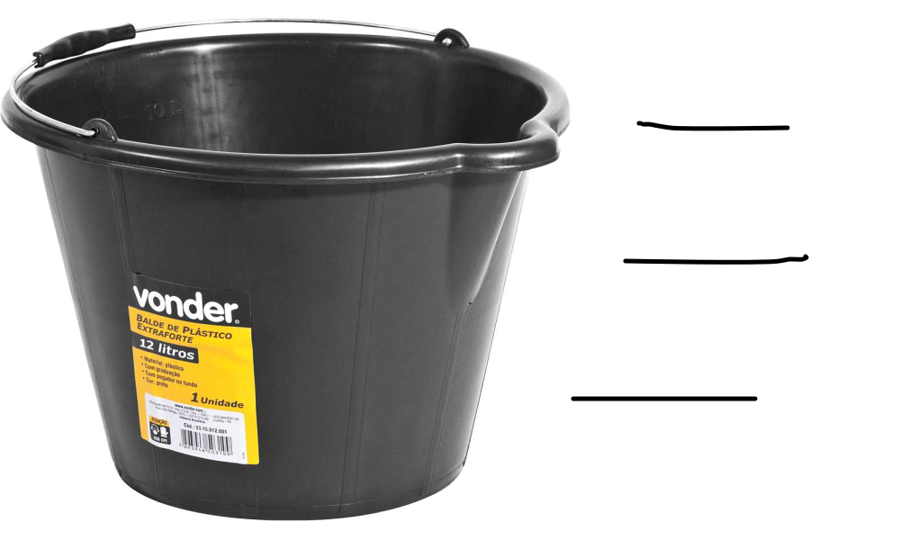
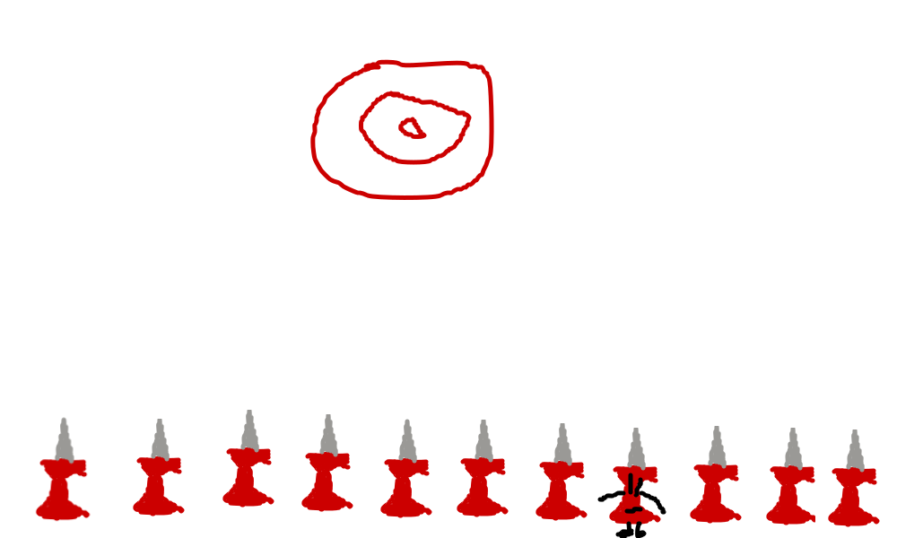

Hoje foi o Grande dia que chegou o Blade de tinta preto da Vonder que eu encomendei dia 22 de fevereiro. Ele estava com o cheiro de um balde de tinta da Vonder.
hoje, o meu Balde de tinta preto da vonder quase fugiu, pois os Baldes de tinta preto vonder são muito rápidos e agilidosos.
Os baldes de tinta preto da Vonder são extremamente rápidos, e capazes de alcançar uma velocidade de 70 m/s (252 km/h).

Hoje o meu balde de tinta preto da Vonder comeu muita coisa, pois dei muita comida, porque tropecei e tive pregiça de juntar. E ele comeu Tudo!
Eu estava planejando para dar um nome para o meu Balde de tinta preto da Vonder.
porém eu ia dar o nome para ele no sétimo dia, mas, pela minha impaciência escolhi hoje mesmo.
Hoje o Rogério não me largou por 1 segundo.
Em todo lugar que eu estava, ele estava lá, junto comigo. quando eu tava tirando sentido de meme podre, ele estava lá.
Até quando eu fui dormir, o Rogério estava lá.
Curiosidade: os Baldes de tinta da Vonder aprendem seus nomes em 2 dias.
hoje, o Rogério já acostumou com o nome dele. Quando eu falo "Rogério!" do outro lado da sala, ele aparece.

Hoje, me lembrei de um ensinamento sobre os Baldes de tinta da Vonder. Há um treinamento que deixa seu balde de tinta preto da Vonder 276,3% mais ágil. O treinamento de mortais. por algum motivo, os Baldes de tinta preto da Vonder tem algumas formas de ficarem com muita força em um desses 3 atribútos.

E estou pensando em participar do BFB (Briga Fera de Baldes)
Para isso, preciso treinar o Rogério nas 3 categorias.
Hoje, treinei o Rogério no atribúto de força de longe.
pelo o que fui ensinado, para o Balde de tinta preto da Vonder aprender o atribúto de força de longe, temos que fazer um cenário e dar a ele uma arminha.
fica mais ou menos assim:

Agora, é só esperar ele fazer resultados magníficos, e passar para o próximo nível.
Hoje, treinarei o Balde de tinta preto da Vonder no atributo de Magia
E lembrei do meu ensinamento que os Baldes de tinta da preto Vonder, aprendem Magia tirando sentido de meme podre.
Vamos lá. Primeiro, pegue um meme podre.
Depois, tire a imagem, e coloque um nome, acompanhado de uma profissão
Depois coloque a imagem sem o sentido, e tire completamente a qualidade.
Ficou assim:

Hoje, treinarei o Rogério no atributo de Força de perto.
Fui ensinado que os Baldes de tinta preto da Vonder só conseguem treinar Força de longe com um certo cenário.
Precisamos coloca-los contra um manequim do seu maior inimigo.
Então, a pergunta vem, como que eu sei quem é o maior inimigo do Rogério?
É simples: Eu pesquisei.
Curiosidade: Antigamente, nós, humanos não sabiamos sobre os Baldes de tinta preto da Vonder, porém um dia, desdcobriram algo sobre os Baldes de tinta preto da Vonder
Eles tem inimigos.
Quando a tecnologia avançou, fizeram um site para compilar todos os Baldes de tinta preto da Vonder (desde que já tenham nome). O nome do site é BTPV.com
então pesquisei no BTPV.com o inimimigo do Rogério acessando a pasta "meu BTPV". Então, apareceu.
Então, coloquei um manequim do Odair. Ficou mais ou menos assim: